Screen Review
Nothing Projector 120" Matte White Motorized Floor Rising Screen Review
Disclosure: As an Amazon Associate and a Nothing Projector Partner Affiliate, I earn from qualifying purchases.
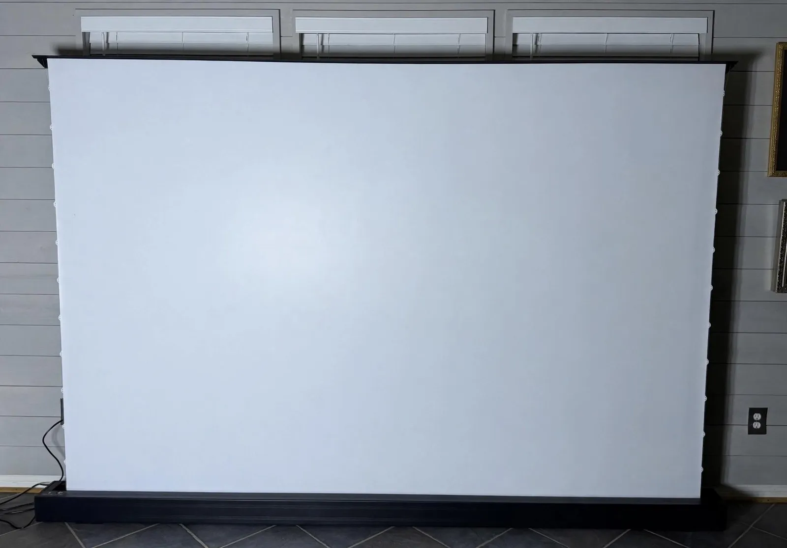
Today I'm reviewing the Nothing Projector 120 inch Matte White Motorized Floor Rising Screen. The 120 inch version sells for $999, and there is a 100 inch version for $699.
For testing I used the XGIMI Elfin Flip 4K and XGIMI Horizon 20 Max, which are my daily drivers.
Key specs
- Sizes: 100 inch and 120 inch (16:9, with 4:3 and 1:1 switchable from the remote)
- Material: matte white PVC, 1.3 gain, tab tensioned
- Viewing angle: 170 degrees
- Works with: long throw, short throw, and ultra short throw projectors
- Resolution and 3D: 4K and 8K ready, with Active 3D support
- Casing: aluminum body, dust resistant sealed case, hidden carry handle
- Controls: physical remote, wireless USB trigger, Tuya app with Alexa and Google Assistant
- Warranty: 1 year, with a 30 day money back guarantee on direct orders
Build quality and setup
The screen arrived well packaged and the casing feels well built. It is heavy, so grab a second set of hands for unboxing. In the box you get tools for manual height adjustment plus attachment rails if you want to pair the screen with a UST projector table. Worth noting, this is a matte white screen, so it pairs best with standard or long throw projectors, but it works with UST projectors too.
The tab tensioned surface pulls the material flat. No wrinkles or curling on my unit.
The casing itself is aluminum and sealed, which keeps dust off the material while the screen sits rolled up. There is also a hidden handle built into the case for moving it from room to room. You will still want help carrying it, but the handle makes shorter moves manageable on your own.
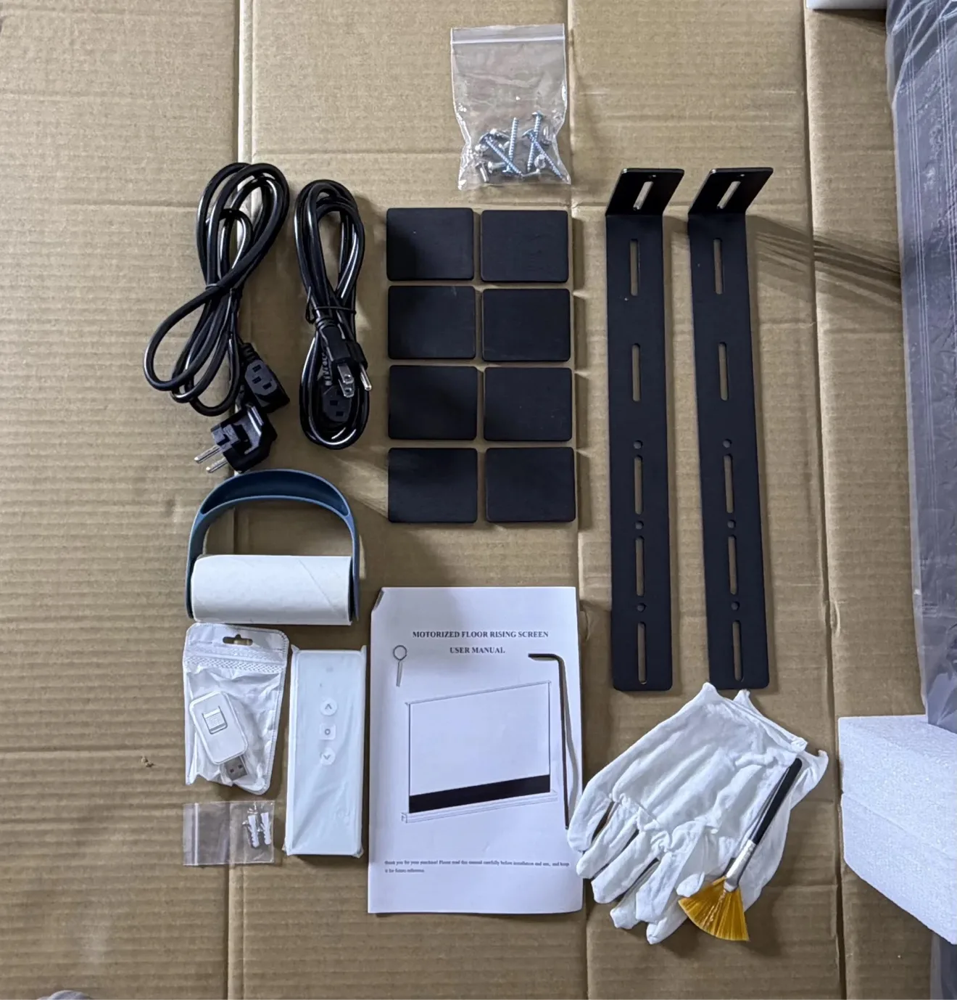
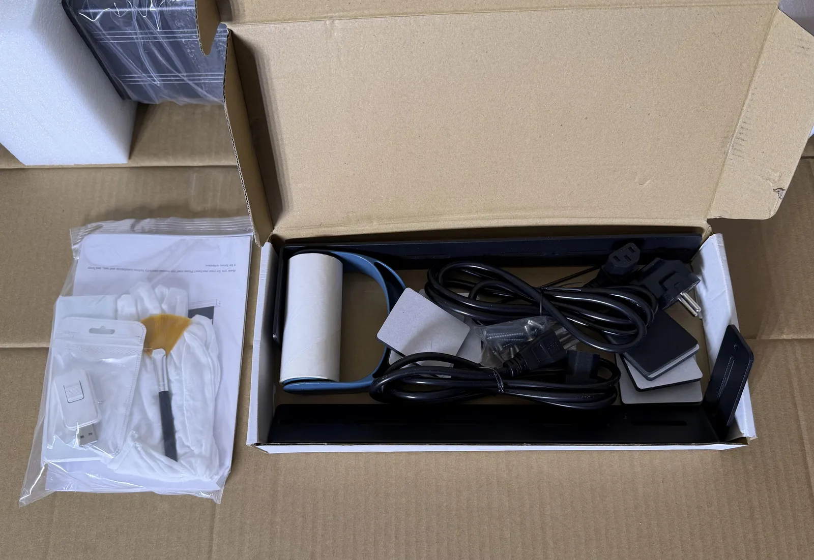
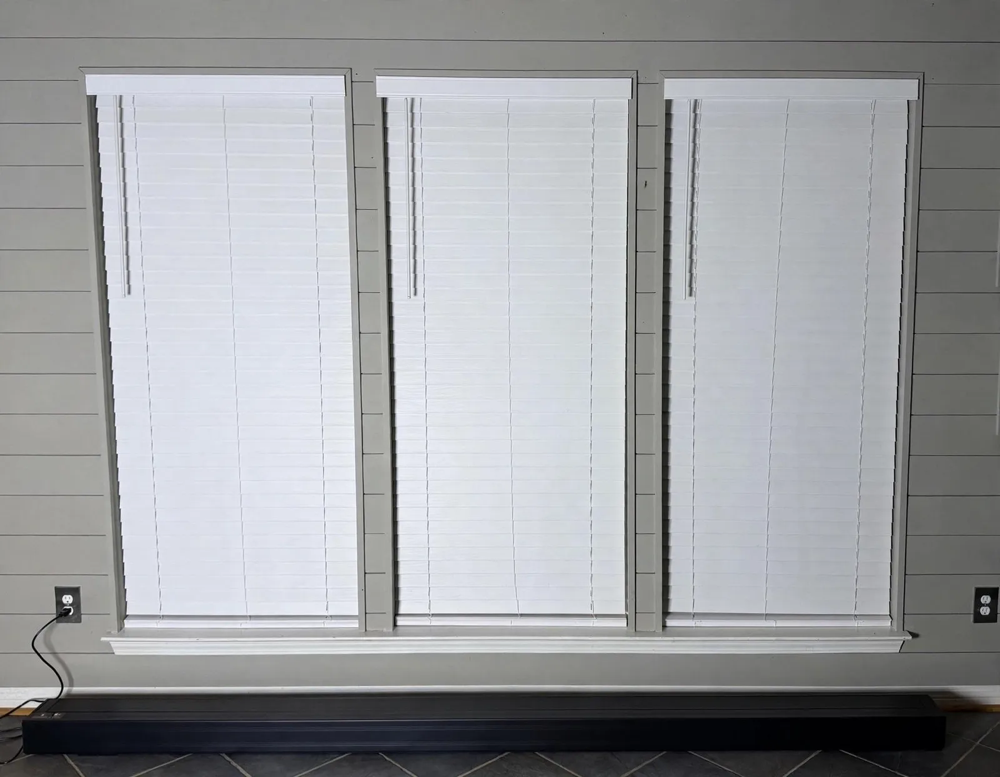
Picture quality
The matte white surface has low reflection, which pairs nicely with laser projectors. Laser shimmer was minimal on my unit. Colors and contrast look great in a dark room. With my living room lights on the image stayed visible and watchable, but a dark room is where the screen truly shines.
The 1.3 gain helps too. It gives the image a little extra brightness over projecting on a plain wall, without the narrow sweet spot you get from high gain screens. That matters in a living room where not everyone sits dead center.
I checked the viewing angle from the sides of the room and it held up, which matches the 170 degree claim. 3D playback looked good too. There is no light leaking out the back either, thanks to the black backing on the rear side of the material.
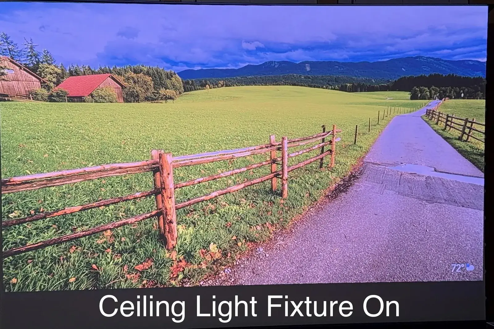
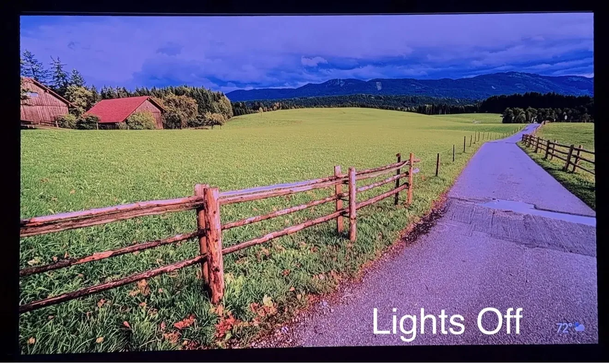
Lights on performance (top) lights off (bottom)
Motor, remote, and controls
There is slight audible noise from the motor while the screen is raising or lowering. That is normal for motorized screens, and it goes silent once the screen is fully extended or retracted.
The physical remote is simple. Up and down run the screen all the way, and the stop button halts it anywhere so you can dial in the exact height. The remote also switches aspect ratios, which worked with no issues.
The wireless USB trigger worked well. Apply power and the screen rises fully. Remove power and it retracts back into the casing. Simple.
Smart control
I signed into the Tuya app and the screen showed up as a new device on its own. After entering my WiFi info and assigning it to a room, I could open, close, or pause it mid travel. I linked Tuya to Alexa successfully too.
The remote has position memory controls on the back for saving a preferred upper limit. I left it at the factory default, which worked well for me.
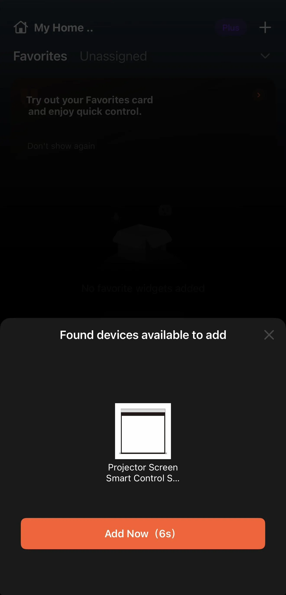
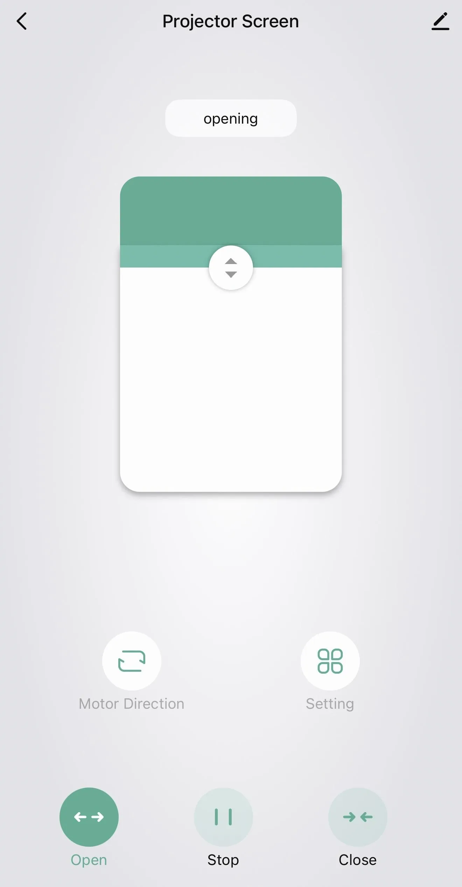
Who is this for
This is for anyone who wants a big screen for movie night and a normal looking room the rest of the time. It takes up almost no visible space retracted, the screen is up within seconds, and you never have to recalibrate the image.
It has also become the screen I test other projectors on. A flat matte white surface does not favor one projector over another, so it makes a fair base for comparisons, and because it retracts I can change setups without moving furniture around.
Final verdict
Solid build, flat surface, great image in a dark room, and the motor plus smart controls make it easy to live with. The one downside is the weight. You will want a second set of hands to move it. Nothing Projector backs it with a 1 year warranty, and direct orders get a 30 day money back guarantee, which takes some of the risk out of the price. If you want a 120 inch screen that disappears when you are done watching, this is easy to recommend.
More photos from testing
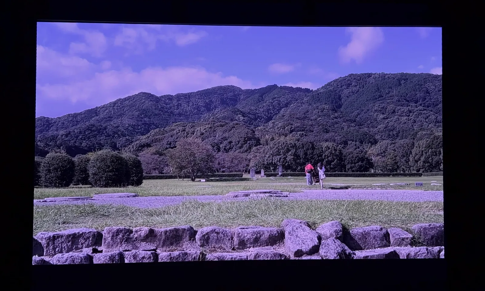
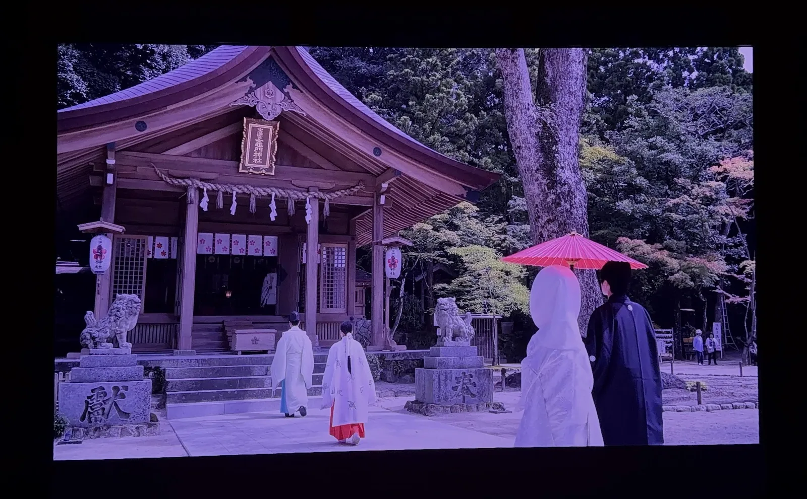
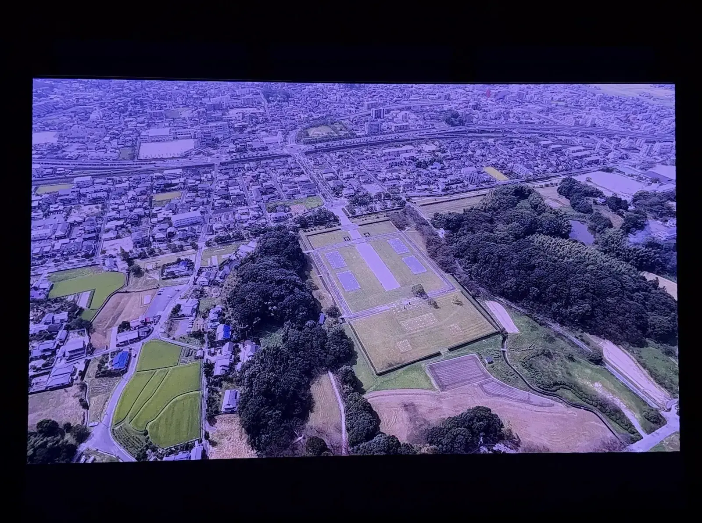
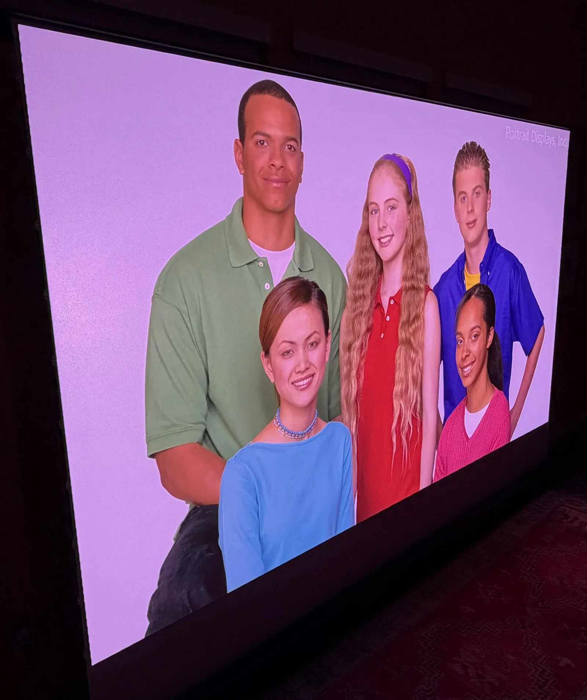
Where to buy
Disclosure: As an Amazon Associate and a Nothing Projector Partner Affiliate, I earn from qualifying purchases.
Promo codes
Nothing Projector discount codes, for direct orders on their website only (they do not apply on Amazon): HBX40 takes $40 off screen orders under $500, and PWH60 takes $60 off screen orders over $500. The codes also apply to fixed frame and ceiling screens.
For more info or questions about this screen, or any of the other options they carry, book a consultation or contact me and I'd be happy to offer some suggestions.
This review was first posted in r/BudgetProjectors.